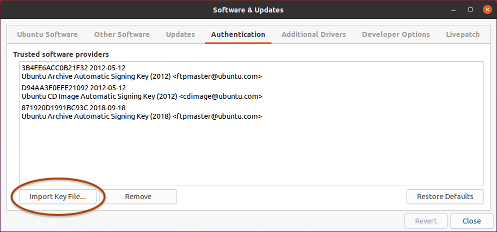
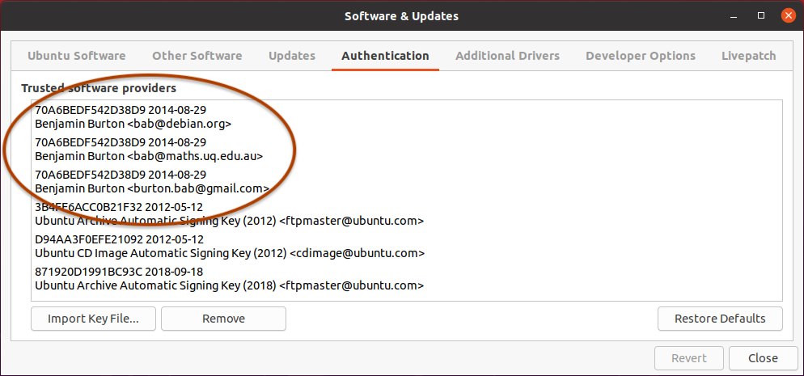
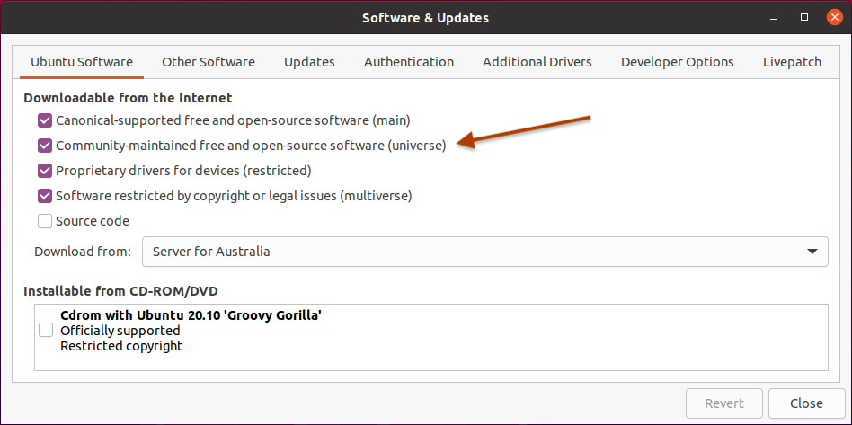
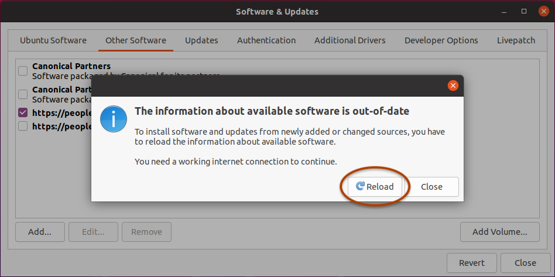
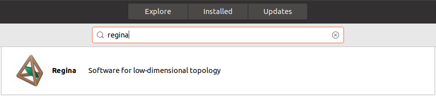
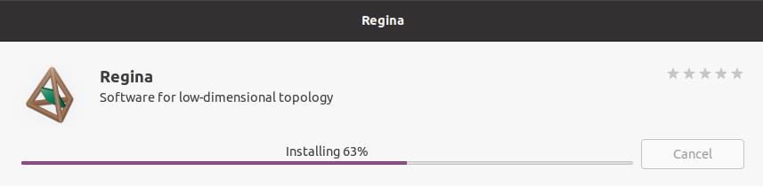

Add Regina's location to your list of repositories. To do this, open the Software & Updates application.
Under Authentication, import Regina's cryptographic signing key. This helps keep your machine secure, and Ubuntu may refuse to install Regina without them. You can download Regina's cryptographic signing key here.

When you import this key file, you should see new keys in the list of trusted software providers, under the name Benjamin Burton. After the import, you can delete regina-key.txt if you like.

Under Ubuntu Software, enable the community-maintained free and open-source software (universe) if this has not been done before.

Under Other Software, click the Add... button. When Ubuntu asks you for an APT line, type:
deb https://people.debian.org/~bab/regina hirsute/

-
Now close the Software & Updates application. Ubuntu should offer to reload the information about available software. Press Reload, so that Ubuntu can see the new packages for Regina.

Next, open the Ubuntu Software application and search for Regina.

Click on the package name (or icon, or description), and you will see more information. You should ensure that the version is correct (i.e., you are getting the latest version of Regina from this site, not the older version that is already bundled into Ubuntu).
Once you are satisfied that Ubuntu has found the right version, press Install and you are finished!
